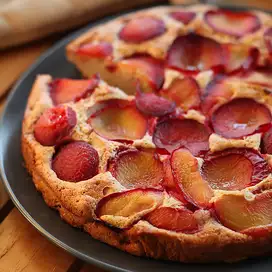

Cake recipe

Description
This is a great cake for those who find the usual cakes too filling.
This is great for entertaining as well as for the family.
If this cake stays more than 24 hours, it should be kept refrigerated.
Ingredients
- 3 eggs
- ½ cup butter, softened
- ½ cup white sugar
- 1 teaspoon lemon zest
- 1 cup all-purpose flour
- ½ teaspoon baking powder
- 1¼ cups plums, pitted and quartered
Steps
- Preheat oven to 375 degrees F (190 degrees C). Grease and flour one 9-inch tube pan.
- Separate the eggs. In a small bowl, beat the egg whites until stiff peaks form, and set aside.
- In a large bowl, cream the butter and sugar. Beat in the egg yolks and the lemon zest.
- Stir together the flour and baking powder and then blend the flour mixture into the creamed mixture.
Gently fold in the egg whites. Spread the batter evenly into the prepared pan. There will only be a little over an inch of batter.
Arrange the plums, skin side down, attractively over the batter.
- Bake in preheated oven until a tester inserted in the center comes out clean, about 40 minutes.
Transfer to a cooling rack and allow to cool before serving.